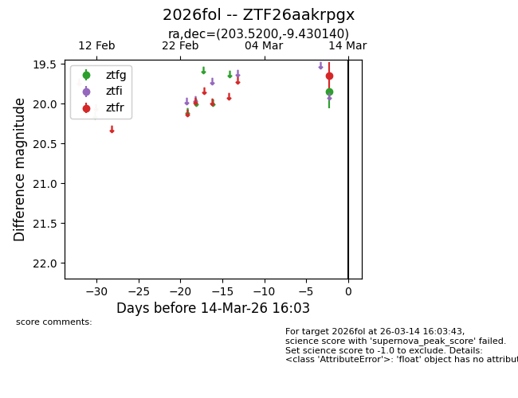
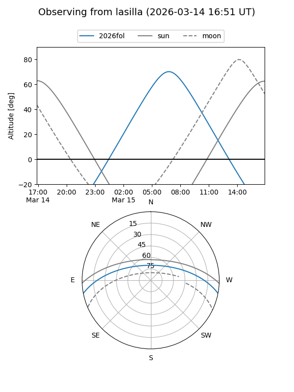
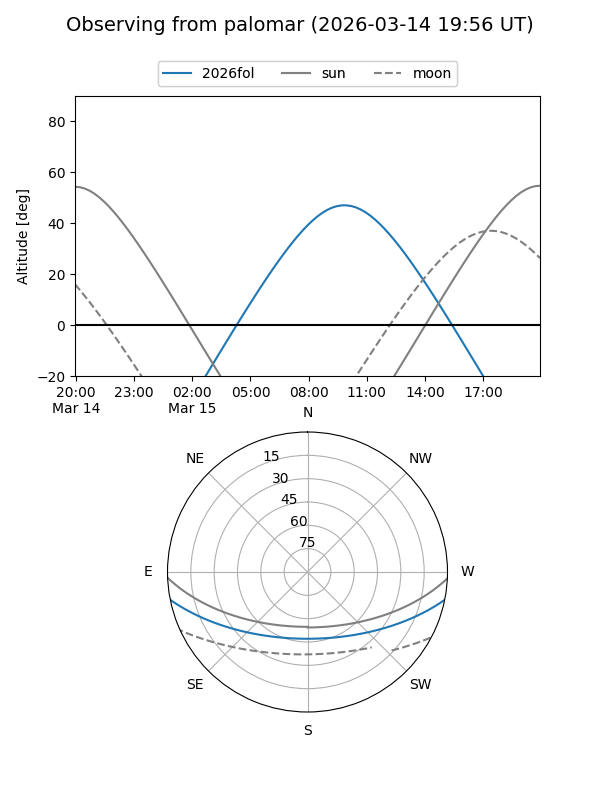
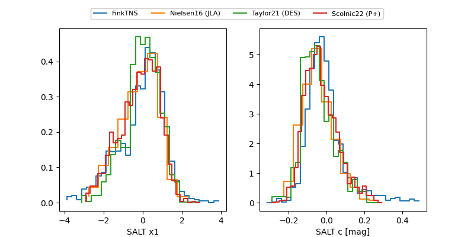

2026fol
Target 2026fol at 2026-03-14 16:06
Aliases and brokers:
FINK: link
Lasair: link
ALeRCE: link
TNS: link
YSE: link
alt names
ZTF26aakrpgx (ztf,fink_ztf)
2026fol (tns,yse)
Coordinates:
equatorial (ra, dec) = 203.5200,-9.43014
equatorial (HMS+DMS) = 13:34:04.80,-09:25:48.50
galactic (l, b) = (320.1774,+52.00803)
Flags:
Photometry:
last ztfg=19.85, ztfr=19.65
1 ztfg, 1 ztfr detections
Lightcurve

Visibility


Additional plots
